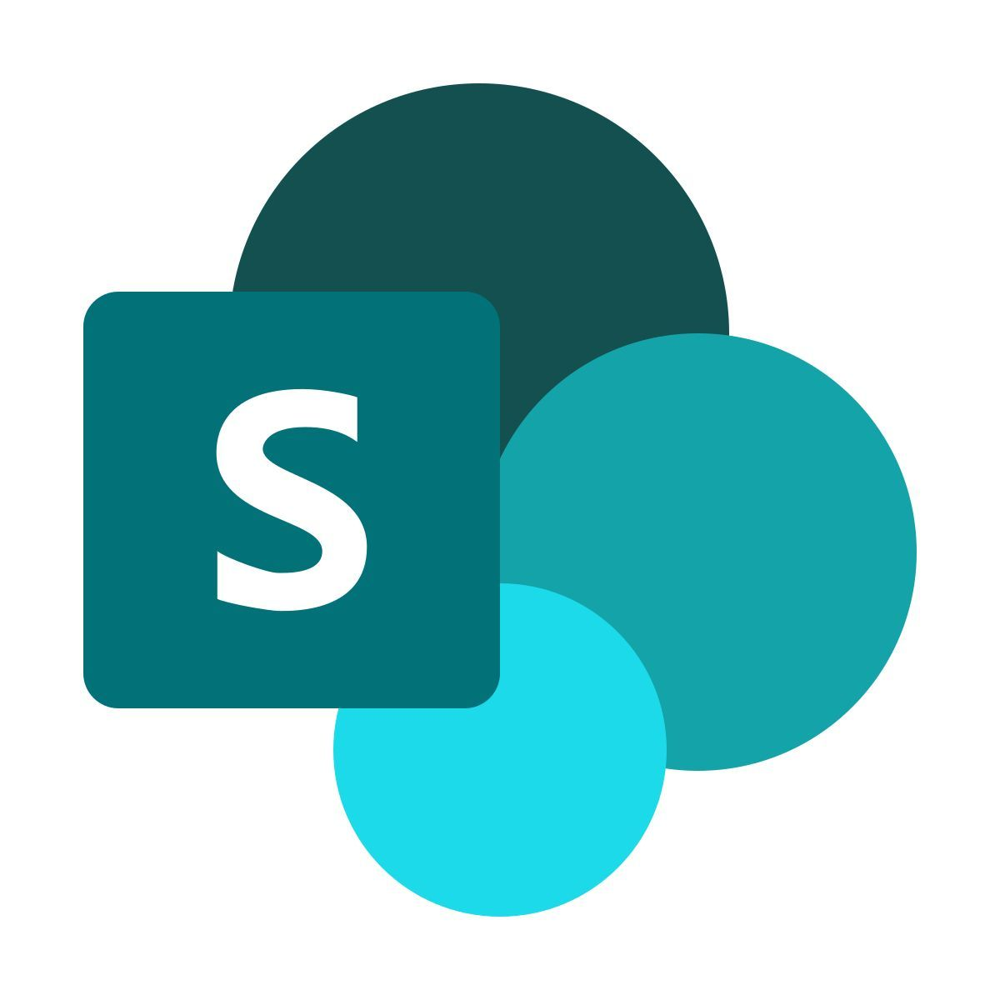
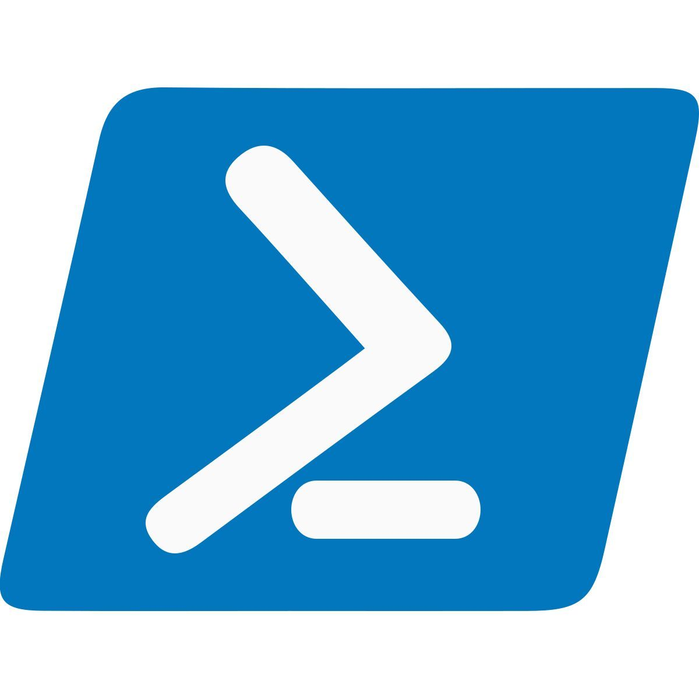
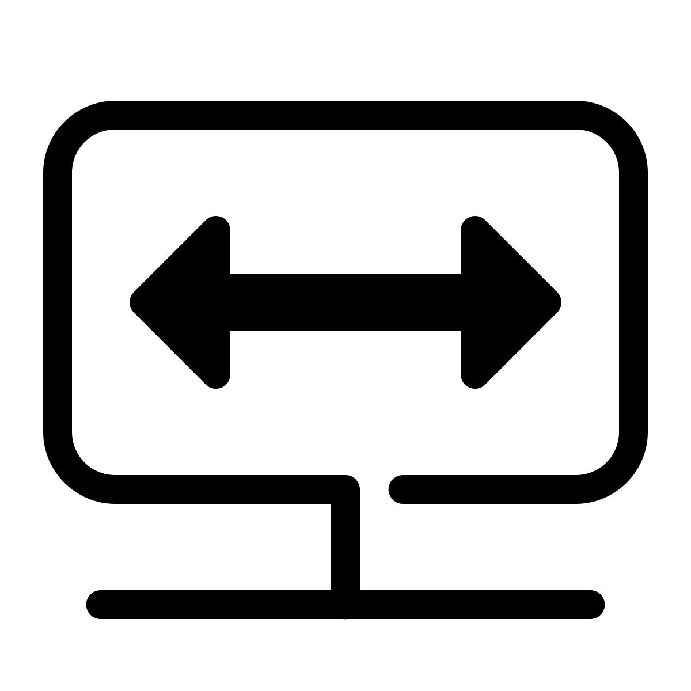

Projet 1
Titre du projet de formation à ajouter
Cette zone est prévue pour accueillir une réalisation effectuée en centre de formation.
Cette zone est prévue pour accueillir une réalisation effectuée en centre de formation.
Tu pourras ajouter ici une autre activité réalisée à l’école.
Mettre en place et configurer une solution centralisée (GLPI), couplée à une stratégie de groupe (GPO), afin d'automatiser la remontée d'informations de l'ensemble des postes du réseau.

Concevoir et structurer un espace collaboratif interne via SharePoint, destiné à centraliser la documentation technique et les procédures informatiques.

Concevoir et déployer un script d'automatisation en PowerShell dédié au processus d'intégration des nouveaux collaborateurs.

Configurer et sécuriser une solution d'accès distant pour faciliter le télétravail et les déplacements des collaborateurs dans un environnement de confiance.